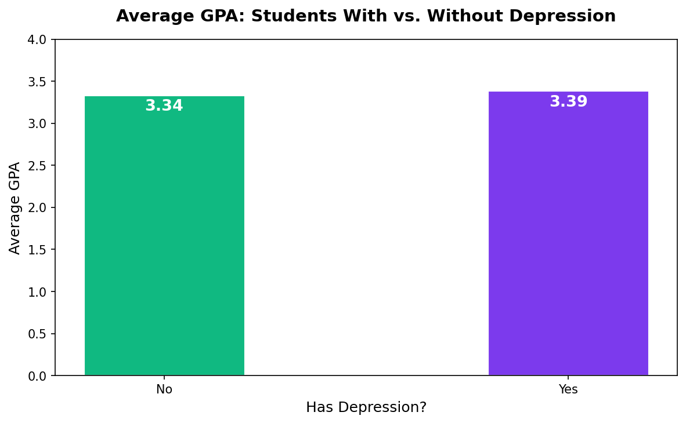

Average GPA: Students With vs. Without Depression
This bar chart compares the average GPA of students who reported having depression versus those who did not. The results show whether academic performance is affected by depression, helping us understand if struggling students are also more likely to be experiencing mental health challenges.

Depression Rate by Year of Study
This bar chart shows the percentage of students reporting depression broken down by their year of study (Year 1 through Year 4). It reveals which stage of university life is most associated with depression, which could help schools target mental health support more effectively.

Overlap Between Anxiety and Depression in Students
This grouped bar chart compares students who have anxiety versus those who do not, and within each group shows how many also have depression. The chart answers whether anxiety and depression tend to occur together, revealing the relationship between these two common mental health conditions in students.